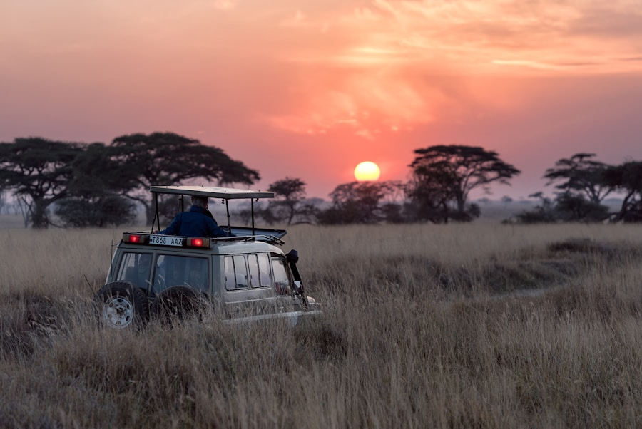
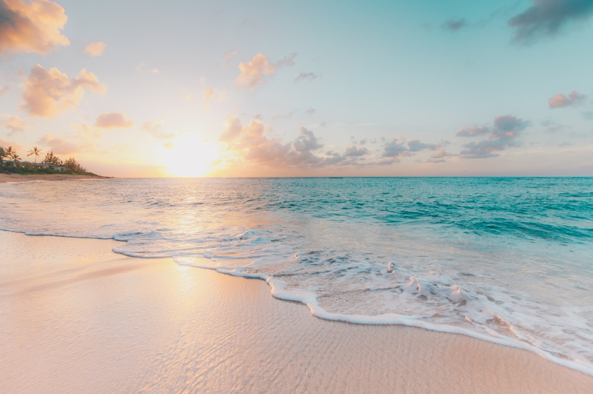
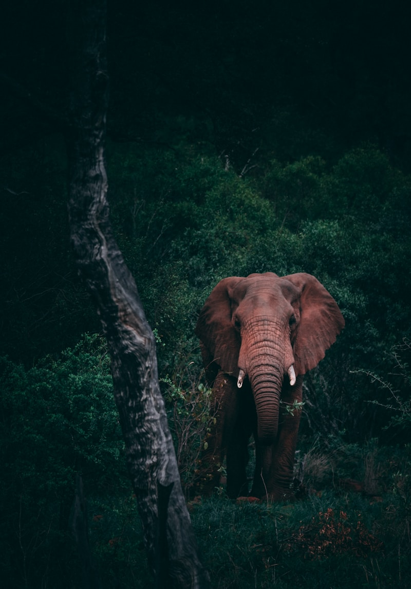
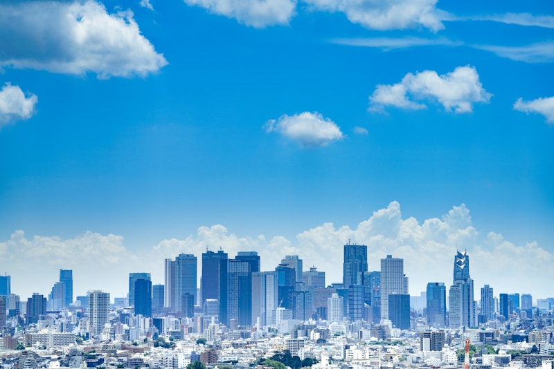

Sinharaja Rainforest Walk
Sinharaja, Sri Lanka
Verified Eco-Provider
View Details
ETCP Voyager
Explore verified eco-providers, responsible travel experiences, local community tourism, and conservation-focused adventures across Sri Lanka.
Trusted by over
10K+ eco-travellers
Eco-Explorer Search
Discover verified eco-tourism experiences by destination, activity, date, and sustainability rating.
Featured Experiences
Sinharaja, Sri Lanka

Yala, Sri Lanka

Knuckles, Sri Lanka
Experience responsible travel through verified eco-providers, conservation-focused activities, and local community support.



Eco-Passes
Choose verified eco-tourism experiences that support conservation, local communities, and low-impact travel.

Ella, Sri Lanka
★★★★★ 4.8/5
LKR 22,000 / night

Mirissa, Sri Lanka
★★★★★ 4.6/5
LKR 20,000 / trip

Udawalawe, Sri Lanka
★★★★★ 4.7/5
LKR 17,500 / trip

Sigiriya, Sri Lanka
★★★★★ 4.9/5
LKR 9,500 / trip
Sinharaja, Sri Lanka
★★★★★ 4.8/5
LKR 12,500 / trip
Knuckles, Sri Lanka
★★★★★ 4.9/5
LKR 15,000 / trip

How It Works
Search by destination, activity, date, and sustainability rating.
Review sustainability ratings, provider credibility, local impact, and traveller reviews.
Confirm availability, traveller details, pricing, and eco-contribution.
Track bookings, saved experiences, itinerary, and sustainability impact.
Responsible Travel
Providers are reviewed for responsible tourism practices.
Each experience includes visible sustainability scoring.
Experiences help support Sri Lankan communities.
Bookings can contribute to conservation-focused activities.
Eco-Journeys
Keep bookings, saved experiences, itinerary details, and impact tracking in one calm traveller workspace.
Next: Horton Plains sunrise walk
Rainforest, Hiking, Village Eco-Tour
Lower-impact travel choices tracked
Share provider feedback
Verified Eco-Provider · Local Community Support
Eco-Pass confirmed · Conservation Contribution included
Recommended through ETCP Voyager
Start Your Journey
Discover verified eco-experiences, support local communities, and travel with lower impact.